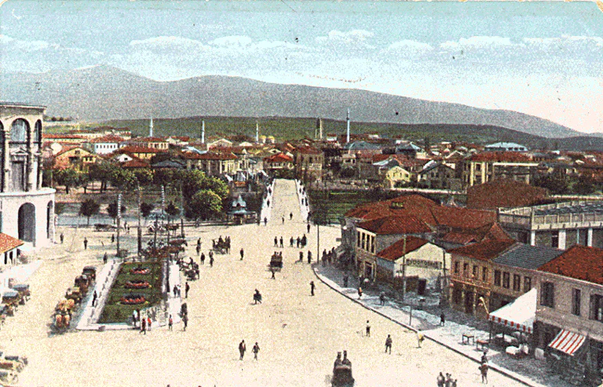
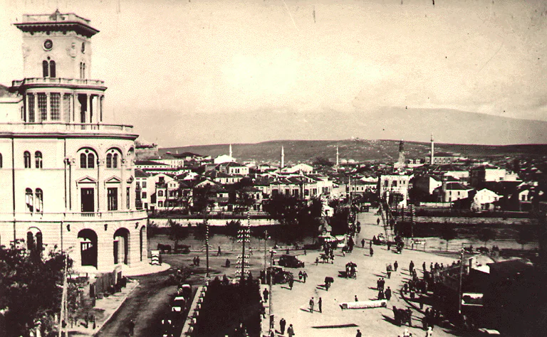
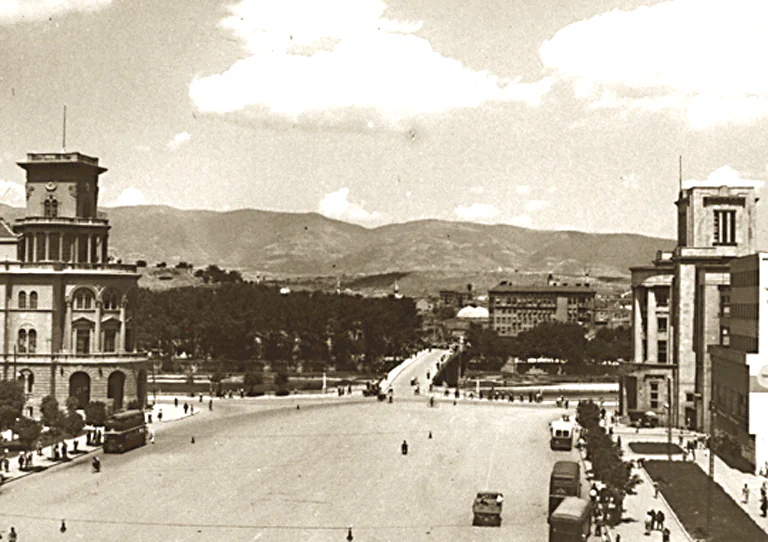

Proslava - trg
- Scenarij
- Aco Petrovski i Aki Pavlovski
- Režija
- Trajče Popov
- Snimatelj
- Kiro Bilbilovski i Trajče Popov
- Godina
- 1949
- Trajanje
- 00:19

Trg grada Skoplja snimljen oko sredine 19. stoljeća.

Skoplje krajem 19. stoljeća. Trg s Burmali džamijom i nekoliko zgrada izgrađenih oko nje. Neoblikovana ulica. Okupljalište prijevoznika robe za trgovinu, s volovskim zapregama.

Trg krajem 19. i početkom 20. stoljeća. U prednjem planu je stajalište fijakera i zaprežnih kola. Desno se protežu zgrade, u dva reda, koje su bile pred samim kamenim mostom. Iza njih je Burmali džamija. Lijevo od nje izgrađene su stambene zgrade, a odmah iza njih vidi se dio banke. U pozadini se uzdiže skopska tvrđava - Kale s vojarnom.

Trg krajem 19. i početkom 20. stoljeća. U prednjem planu je stajalište fijakera i zaprežnih kola. Desno se protežu zgrade, u dva reda, koje su bile pred samim kamenim mostom. U njima su bili smješteni trgovački i obrtnički dućani. Lijevo od njih je Burmali džamija, a uz nju su izgrađene stambene zgrade. U pozadini se uzdiže skopska tvrđava - Kale s vojarnom.

Skoplje za vrijeme Balkanskih ratova. Burmali džamija sa stajalištem fijakera. Desno od nje vide se obostrano izgrađene zgrade koje su se nalazile ispred ulaza na Kameni most. U njima su bili smješteni trgovački dućani i obrtnici. U prednjem planu vide se čistači cipela i prisutnost vojnika. Ulica je oblikovana s otvorenim kanalima za oborinsku vodu.

Dio trga ispred Kamenog mosta (za vrijeme Balkanskog rata). Uočavaju se nepopločene ulice. Zgrada lijevo jedna je od zgrada izgrađenih u dva reda ispred Kamenog mosta. U njima su se nalazili trgovački i obrtnički dućani. Oko 1920. godine bile su srušene.

Skoplje, oko 1920. godine. Dio gradskog trga ispred Kamenog mosta. Prvi kiosci za usputne usluge i prodaju. Kiosci imaju naglašenu arhitekturu u detaljima, tj. u oblikovanju krovova. Most je proširen pješačkim konzolama.

Skoplje, oko 1920. godine. Uređen gradski trg s urbanim elementima, ograđenim zelenim skverom, uređenim kaldrmisanim površinama i popločenim pločnicima s rubnjacima. Naglašen prilaz Kamenom mostu s nesmetanim pogledom na rijeku i gradsku tvrđavu. Živost građana i fijakera kao javnih prijevoznih sredstava.

Skoplje, oko 1920. godine. Uređen gradski trg s urbanim elementima, ograđenim zelenim skverom, uređenim kaldrmisanim površinama i popločenim pločnicima s rubnjacima. Naglašen prilaz Kamenom mostu s nesmetanim pogledom na rijeku i gradsku tvrđavu. Živost građana i fijakera kao javnih prijevoznih sredstava.

Skoplje nakon Prvoga svjetskog rata s početkom uređenja gradskog trga. Srušene su zgrade koje su se nalazile iza Burmali džamije, ispred Kamenog mosta. Most ima novu ogradu na pješačkim konzolama. U pozadini se vidi dio Pajko mahale, na lijevoj obali Vardara.

Skoplje odmah nakon Prvoga svjetskog rata. Gradski trg prije izgradnje Ristićeve palače. Pogled na razbijenu strukturu s tradicionalnom arhitekturom. Ravno gore je glavna ulica koja vodi do tadašnjeg kolodvora. Lijevo, do pola visine, današnja ulica „11. listopada“.

Skoplje, 1920-ih. Gradski trg s južne strane s dijelom Ristićeve palače na desnoj strani. Lijevo su hotel „Sarajevo“, hotel „Ujedinjenje“ i kavana „Marger“. Razvoj brojnih zgrada i trgovačkih dućana uz glavnu ulicu.

Trg, 1920-ih. U prednjem planu je stajalište fijakera (ispred Časničkog doma), a u pozadini dominira zgrada ljekarnika Ristića, popularno nazvana Ristićeva palača.

Skoplje oko 1930. godine. Gradski trg s južne strane s Ristićevom palačom i drvarom u prednjem planu. Razvoj brojnih zgrada i trgovačkih dućana uz glavnu ulicu.

Skoplje, oko 1930. godine. Dio gradskog trga s Ristićevom palačom. Desno se vidi ograda drvare, gdje se prodavao građevinski materijal.

Snimka trga Makedonija iz zraka. (1920-ih)

Dio trga s Ristićevom palačom (1930-ih)

Dio trga i Ristićeva palača. Lijevo dolje postavljena je natkrivena platforma za vojni orkestar, koji je svirao nedjeljom i blagdanima. Desno u daljini vidi se mlin „Balkan“. (1930-ih)

Skoplje oko 1930. godine. Gradski trg s Ristićevom palačom i drvarom u prednjem planu. Razvoj brojnih zgrada i trgovačkih dućana uz glavnu ulicu.

Skoplje oko 1930. godine. Gradski trg s južne strane nakon izgradnje Ristićeve palače, s drvarom u prednjem planu. Razvoj brojnih zgrada i trgovačkih dućana uz glavnu ulicu.

Skoplje oko 1930. godine. Dio trga s južne strane, nakon izgradnje Ristićeve palače, s drvarom u prednjem planu i glavnom ulicom prema željezničkom kolodvoru s brojnim zgradama i trgovačkim dućanima.

Dio trga, s Časničkim domom u pozadini
- 1920-ih.

Trg oko 1927. godine. Južni prilaz Kamenom mostu. Straga lijevo vide se Narodno kazalište i skopska tvrđava - Kale.

Trg oko 1927. godine. Južni prilaz Kamenom mostu. U prednjem planu je kino-terasa, na kojoj su se ljeti prikazivali filmovi.

Skoplje, oko 1925. godine. Dio gradskog trga ispred Kamenog mosta. Prvi kiosci za usputne usluge i prodaju. Kiosci imaju naglašenu arhitekturu u detaljima, tj. u oblikovanju krovova. Most je proširen pješačkim konzolama. U pozadini lijevo vide se Narodno kazalište i skopska tvrđava - Kale. U prednjem planu ruši se kino-terasa, na čijem je mjestu izgrađena Narodna banka.

Trg oko 1926. godine. Uređen gradski trg s urbanim elementima, ograđenim zelenim skverom, uređenim kaldrmisanim površinama i popločenim pločnicima s rubnjacima. Uz zeleni skver nalazilo se stajalište fijakera, a odmah uz njega i parkiralište za motorna vozila i taksije. Na desnoj strani su restorani i hoteli. Ravno je Kameni most s dijelom Židovske i Pajko mahale. U lijevom dijelu fotografije je Časnički dom u izgradnji.

Trg, druga polovica 1920-ih. Uređen gradski trg s urbanim elementima, ograđenim zelenim skverom, uređenim kaldrmisanim površinama i popločenim pločnicima s rubnjacima. Uz zeleni skver nalazilo se stajalište fijakera. Na desnoj strani su restorani i hoteli. Lijevo je Časnički dom, koji je još u izgradnji. U pozadini je Kameni most s dijelom Židovske mahale i Pajko mahale.

Trg grada Skoplja - 1920-ih. Ispred Časničkog doma nalazilo se taksi-stajalište motornih vozila. Ali i fijakeri još postoje kao prijevozno sredstvo građana.

Cijeli trg - kraj 1920-ih. Ispred Časničkog doma nalazilo se taksi-stajalište motornih vozila. Ali i fijakeri još postoje kao javno prijevozno sredstvo građana.

Trg s hotelom „Sarajevo“ i popularnom kavanom „Marger“, omiljenim mjestom građana Skoplja. Lijevo od hotela „Sarajevo“ bio je hotel „Ujedinjenje“. U prednjem planu, na pločniku, sjedi prodavač đevreka. (oko 1935. godine)

Trg s hotelom „Sarajevo“ i popularnom kavanom „Marger“, koja je bila omiljeno mjesto građana Skoplja. Lijevo od hotela „Sarajevo“ bio je hotel „Ujedinjenje“. Na lijevoj strani vidi se južni prilaz Kamenom mostu - 1920-ih.

Trg s Narodnom bankom, Gospodarskom trgovačkom komorom u izgradnji i dijelom Pajko mahale s Osmanskom bankom. Ispred Gospodarske trgovačke komore su hoteli i kavana „Marger“ (prije rušenja). (1930-ih)

Dio trga sa spomenicima koji su se nalazili na južnom ulazu Kamenog mosta. - 1930-ih

Dio trga prema Kamenom mostu. Na ulazu na most, na dva visoka mramorna postolja, postavljena su dva konjanika (rad kipara Antuna Augustinčića). Na trgu je izgrađena i fontana. Na lijevoj strani vide se Narodno kazalište, skopska tvrđava - Kale i dio Židovske mahale. (oko 1930. godine)

Dio trga s Narodnom bankom i Gospodarskom trgovačkom komorom. (1930-ih)

Trg grada Skoplja, 1950-ih, sa starom poštom u pozadini, a na lijevoj strani Prirodoslovni muzej.

Trg, 1950-ih. Prva zgrada slijeva poznata je pod imenom „Macura“. U njoj su se nalazile središnja ljekarna i druge trgovine. U pozadini se vide Časnički dom, Narodna banka i Kameni most. U prednjem planu, na mjestu nekadašnje drvare, lijepo je uređen park.

Trg grada Skoplja, 1950-ih, s hotelom „Makedonija“ na lijevoj strani.

Trg 1950-ih.

Trg 1950-ih.

Dio trga s Časničkim domom, a u pozadini Narodno kazalište i skopska tvrđava - Kale. (1950-ih)

Dio trga prema Kamenom mostu. Lijevo je Časnički dom, a desno Narodna banka i Gospodarska trgovačka komora. Gradski autobusni prijevoz (obični i dvokatni autobusi), s početnom i završnom postajom na trgu. (1950-ih)

Trg grada Skoplja oko 1950. godine. Lijevo je Časnički dom, a desno Narodna banka s Gospodarskom trgovačkom komorom. Između njih je Kameni most, a s druge strane vide se zgrade banaka i Ibni Pajko.

Trg - 1950-ih

Trg, 1970-ih. Pogled prema Kamenom mostu, zgradi „Ibni Pajko“ i kompleksu banaka. Trg se tih godina koristio kao parkiralište.

Dio trga, 1970-ih, s Ristićevom palačom i zgradama u ulici „Goce Delčev“.

 Akvadukt4 razglednice
Akvadukt4 razglednice Kale30 razglednica
Kale30 razglednica Mostovi60 razglednica
Mostovi60 razglednica Kej58 razglednica
Kej58 razglednica Trg46 razglednica
Trg46 razglednica Građevine66 razglednica
Građevine66 razglednica Kršćanski hramovi19 razglednica
Kršćanski hramovi19 razglednica Muslimanske građevine33 razglednice
Muslimanske građevine33 razglednice Časnički dom29 razglednica
Časnički dom29 razglednica Kazalište28 razglednica
Kazalište28 razglednica Željeznički kolodvor13 razglednica
Željeznički kolodvor13 razglednica Škole36 razglednica
Škole36 razglednica Parkovi12 razglednica
Parkovi12 razglednica Tržnice18 razglednica
Tržnice18 razglednica Ulice38 razglednica
Ulice38 razglednica Panorama I60 razglednica
Panorama I60 razglednica Panorama II30 razglednica
Panorama II30 razglednica Kolaži55 razglednica
Kolaži55 razglednica Poplave9 razglednica
Poplave9 razglednica Potres27 razglednica
Potres27 razglednica Skoplje 2000.26 razglednica
Skoplje 2000.26 razglednica